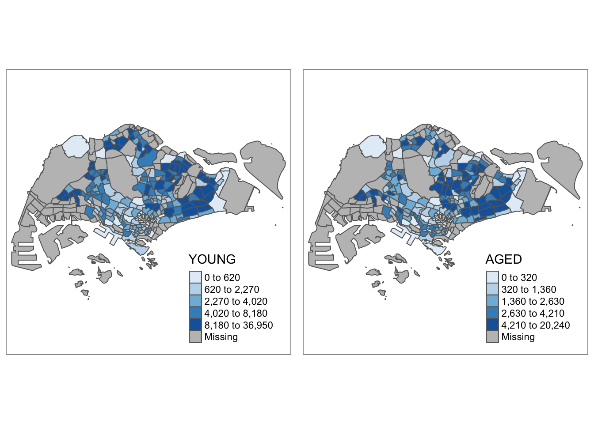

pacman::p_load(sf, tmap, tidyverse)Hands-on_Exercise 7a: Choropleth Mapping with R
Overview
Choropleth is used to symbolise enumeration of units, such as countries, provinces, states, counties, or census units, using area patterns or graduated colors.
In this chapter we will try to plot choropleth maps using tmap package of R
Getting Started
here are the packages we are going to use in this hands on:
tmap, to plot choropleth map
readr, read delimited text file (tidyverse)
tidyr, tidying data (tidyverse)
dplyr, wrangling data (tidyverse)
sf, handling geospatial data
Importing Data into R
there will be 2 data we are going 2 use for this hands on:
master plan 2014 subzone boundary, to plot the geospatial data
singapore residents by planning area/subzone, age group, sex and type of dwelling, JUNE 2011-2020. to company the geospatial data
Importing Geospatial data
using st_read from sf package to read geospatial data
mpsz <- st_read(dsn = "data/geospatial",
layer = "MP14_SUBZONE_WEB_PL")mpszImporting Aspatial data
reading the aspatial data
popdata <- read_csv("data/aspatial/respopagesextod2011to2020.csv")Data Preparation
we are going to grouped the population based on age:
YOUNG: age group 0 to 4 until age groyup 20 to 24
ECONOMY ACTIVE: age group 25-29 until age group 60-64
AGED: age group 65 and above
we are going to calculate another 2 columns, they are:
TOTAL: all age group
DEPENDENCY: the ratio between young and aged against economy active group
Data Wrangling
we are going to utilise 2 function to do the data wrangling:
pivot_wider() from tidyr
mutate, filter, group_by, select from dplyr
popdata2020 <- popdata %>%
filter(Time == 2020) %>%
group_by(PA, SZ, AG) %>%
summarise(`POP` = sum(`Pop`)) %>%
ungroup() %>%
pivot_wider(
names_from = AG,
values_from = POP
) %>%
mutate (`YOUNG` = rowSums(.[3:6])+rowSums(.[12]),
`ECONOMY ACTIVE` = rowSums(.[7:11])+rowSums(.[13:15]),
`AGED`=rowSums(.[16:21]),
`TOTAL`=rowSums(.[3:21])) %>%
mutate(`DEPENDENCY` = (`YOUNG` + `AGED`)/`ECONOMY ACTIVE`) %>%
select(`PA`, `SZ`, `YOUNG`,
`ECONOMY ACTIVE`, `AGED`,
`TOTAL`, `DEPENDENCY`)Joining the attribute data and geospatial data
changing the pa and sz field to all upper case and remove all row where economy active population is 0 to prevent plotting NaN later on
popdata2020 <- popdata2020 %>%
mutate_at(.vars = vars(PA, SZ),
.funs = funs(toupper)) %>%
filter(`ECONOMY ACTIVE` > 0)doing a left join between the geospatial data and the attribute (aspatial) data by subzone name (SZ)
mpsz_pop2020 <- left_join(mpsz, popdata2020,
by = c("SUBZONE_N" = "SZ"))writing the combined dataset to an rds to easier read next time without repeating all the wrangling
write_rds(mpsz_pop2020, "data/rds/mpszpop2020.rds")reading the rds back
mpsz_pop2020 <- read_rds("data/rds/mpszpop2020.rds")Choropleth mapping Geospatial Data Using tmap
Two approaches can be used to prepare thematic map using tmap, they are:
Plotting a thematic map quickly by using qtm().
Plotting highly customisable thematic map by using tmap elements.
qtm method
tmap_mode(‘plot’) to make the plot to static
the fill is to map the attribute with depedency
#turn off the interactivity of tmap
tmap_mode("plot")
qtm(mpsz_pop2020,
fill = "DEPENDENCY")
tm elements method
this way we are going to add layer by layer to the plot
tm_shape(mpsz_pop2020) +
tm_fill("DEPENDENCY",
style = "quantile",
palette = "Blues",
title = "Dependency Ratio") +
tm_layout(main.title = "Distribution of Dependency Ratio by planning subzone",
main.title.position = "center",
main.title.size = 1.2,
legend.height = 0.45,
legend.width = 0.35,
frame = TRUE) +
tm_borders(alpha = 0.5) +
tm_compass(type="8star", size = 2) +
tm_scale_bar() +
tm_grid(alpha =0.2) +
tm_credits("Source: Planning Sub-zone boundary from Urban Redevelopment Authorithy (URA)\n and Population data from Department of Statistics DOS",
position = c("left", "bottom"))next we are going to explore tm elements
drawing a base map
tm_shape(mpsz_pop2020) +
tm_polygons()
adding fill by tm_polygon
tm_shape(mpsz_pop2020)+
tm_polygons("DEPENDENCY")
The default interval binning used to draw the choropleth map is called “pretty”. A detailed discussion of the data classification methods supported by tmap will be provided in sub-section 4.3.
The default colour scheme used is
YlOrRdof ColorBrewer. You will learn more about the color scheme in sub-section 4.4.By default, Missing value will be shaded in grey.
tm fill and tm border
different with polygon tm fill wont give use the border between geospatial area
tm_shape(mpsz_pop2020)+
tm_fill("DEPENDENCY")
tm_shape(mpsz_pop2020)+
tm_fill("DEPENDENCY") +
tm_borders(lwd = 0.1, alpha = 1)
col = border colour,
lwd = border line width. The default is 1, and
lty = border line type. The default is “solid”.
Data Classification method of heat map
there a some data classification that we can use such as fixed, sd, equal, pretty, quantile, kmeans, hclust, bclust, fisher, and jenk. the default style is pretty
jenks
tm_shape(mpsz_pop2020)+
tm_fill("DEPENDENCY",
n = 5,
style = "jenks") +
tm_borders(alpha = 0.5)
equal
tm_shape(mpsz_pop2020)+
tm_fill("DEPENDENCY",
n = 5,
style = "equal") +
tm_borders(alpha = 0.5)
other than built in we also can create our own style by using custom break
summary(mpsz_pop2020$DEPENDENCY) Min. 1st Qu. Median Mean 3rd Qu. Max. NA's
0.1111 0.7147 0.7866 0.8585 0.8763 19.0000 92 since we can see majority of the data are higher that 0.71 we can create a custom break using breaks attribute in tm_fill
tm_shape(mpsz_pop2020)+
tm_fill("DEPENDENCY",
breaks = c(0, 0.60, 0.70, 0.80, 0.90, 1.00)) +
tm_borders(alpha = 0.5)
Colour Scheme
there are ways to color the choropleth plot
1. ColourBrewer
tm_shape(mpsz_pop2020)+
tm_fill("DEPENDENCY",
n = 6,
style = "quantile",
palette = "Blues") +
tm_borders(alpha = 0.5)
we can add ‘-’ to the colour to reverse the shading from dark to light instead of other way around
tm_shape(mpsz_pop2020)+
tm_fill("DEPENDENCY",
style = "quantile",
palette = "-Greens") +
tm_borders(alpha = 0.5)Map Layouts
Map layout refers to the combination of all map elements into a cohensive map. Map elements include among others the objects to be mapped, the title, the scale bar, the compass, margins and aspects ratios. Colour settings and data classification methods covered in the previous section relate to the palette and break-points are used to affect how the map looks.
1. Map legend
tm_shape(mpsz_pop2020)+
tm_fill("DEPENDENCY",
style = "jenks",
palette = "Blues",
legend.hist = TRUE,
legend.is.portrait = TRUE,
legend.hist.z = 0.1) +
tm_layout(main.title = "Distribution of Dependency Ratio by planning subzone \n(Jenks classification)",
main.title.position = "center",
main.title.size = 1,
legend.height = 0.45,
legend.width = 0.35,
legend.outside = FALSE,
legend.position = c("right", "bottom"),
frame = FALSE) +
tm_borders(alpha = 0.5)
2. Map style
tm_shape(mpsz_pop2020)+
tm_fill("DEPENDENCY",
style = "quantile",
palette = "-Greens") +
tm_borders(alpha = 0.5) +
tmap_style("classic")
3. Cartographic Furniture
tm_shape(mpsz_pop2020)+
tm_fill("DEPENDENCY",
style = "quantile",
palette = "Blues",
title = "No. of persons") +
tm_layout(main.title = "Distribution of Dependency Ratio \nby planning subzone",
main.title.position = "center",
main.title.size = 1.2,
legend.height = 0.45,
legend.width = 0.35,
frame = TRUE) +
tm_borders(alpha = 0.5) +
tm_compass(type="8star", size = 2) +
tm_scale_bar(width = 0.15) +
tm_grid(lwd = 0.1, alpha = 0.2) +
tm_credits("Source: Planning Sub-zone boundary from Urban Redevelopment Authorithy (URA)\n and Population data from Department of Statistics DOS",
position = c("left", "bottom"))
To reset the default style, refer to the code chunk below.
tmap_style("white")Drawing multiple choropleth map
In tmap, small multiple maps can be plotted in three ways:
by assigning multiple values to at least one of the asthetic arguments,
by defining a group-by variable in tm_facets(), and
by creating multiple stand-alone maps with tmap_arrange().
1. multiple fill
tm_shape(mpsz_pop2020)+
tm_fill(c("YOUNG", "AGED"),
style = "equal",
palette = "Blues") +
tm_layout(legend.position = c("right", "bottom")) +
tm_borders(alpha = 0.5) +
tmap_style("white")
tm_shape(mpsz_pop2020)+
tm_polygons(c("DEPENDENCY","AGED"),
style = c("equal", "quantile"),
palette = list("Blues","Greens")) +
tm_layout(legend.position = c("right", "bottom"))
2. tm facets
tm_shape(mpsz_pop2020) +
tm_fill("DEPENDENCY",
style = "quantile",
palette = "Blues",
thres.poly = 0) +
tm_facets(by="REGION_N",
free.coords=TRUE,
drop.shapes=FALSE) +
tm_layout(legend.show = FALSE,
title.position = c("center", "center"),
title.size = 20) +
tm_borders(alpha = 0.5)
3. tmap arrange
youngmap <- tm_shape(mpsz_pop2020)+
tm_polygons("YOUNG",
style = "quantile",
palette = "Blues")
agedmap <- tm_shape(mpsz_pop2020)+
tm_polygons("AGED",
style = "quantile",
palette = "Blues")
tmap_arrange(youngmap, agedmap, asp=1, ncol=2)
Mappping Spatial Object Meeting a Selection Criterion
tm_shape(mpsz_pop2020[mpsz_pop2020$REGION_N=="CENTRAL REGION", ])+
tm_fill("DEPENDENCY",
style = "quantile",
palette = "Blues",
legend.hist = TRUE,
legend.is.portrait = TRUE,
legend.hist.z = 0.1) +
tm_layout(legend.outside = TRUE,
legend.height = 0.45,
legend.width = 5.0,
legend.position = c("right", "bottom"),
frame = FALSE) +
tm_borders(alpha = 0.5)